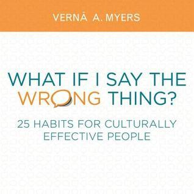

What if I Say the Wrong Thing?: 25 Habits for Culturally Effective People
- Read on 2021-08-03
- Rating: ️️️️️
- Format: 📖 (125 pages)
I read this for work, and enjoyed it. Each topic has its own brief chapter, and fortunately provides some tips at the end of each chapter on how to improve at the habit being highlighted. Early in the book the author, Vernā Myers, put out this example that stuck on my mind the rest of the book:
No matter how skilled a person with an ambulatory disability is at maneuvering themselves, without curb cuts, ramps, he or she is disadvantaged as compared to those of us who can walk.
This example seems too obvious for anyone to deny. We believe a person with disabilities when they tell us about the difficulties they experience using a non-equipped facility. We need to make the move to believing what people from all one-down [or historically disadvantaged] groups say about their experiences of exclusion and bias.
- Prior: Project Hail Mary
- Next: The Last Green Valley